I love travel, but will admit that Israel was not on my bucket list—until I spent a week there on a school spring break trip. Visiting Israel was eye-opening and impactful, if not life-changing, for me. Over the course of a short week, I saw for myself the beautiful cultures, diverse landscapes, delicious food, friendly people, and complex country that Israel is. Despite all the conflict and tensions going on, I met people who deeply loved their country and couldn’t imagine ever leaving.
One perk of traveling with a group is that everything is planned for you, including how to optimize trip planning and travel time, especially given the tightly packed schedule we were on. I would recommend going with a tour group, especially if it’s your first time and you’re not as familiar with traveling around Israel. We were stopped at several security checkpoints, and if you want to go to certain cities in the West Bank like Bethlehem, you likely will only be able to visit through a tour group.
Table of Contents
- Days One and Two: Tel Aviv
- Day Three: The Dead Sea
- Day Four: Nazareth, ATV and Syrian Border, and Sea of Galilee
- Days Five and Six: Jerusalem
- Day Seven: Gaza Border
The flight to Israel was by far the farthest I’ve ever flown in one sitting. My flight from Los Angeles, with a 3-hour layover in Istanbul, took 18 hours total (on the way back I would take a nonstop flight that was about 15 hours). We flew into Ben Gurion Airport (Ben Gurion was the Founding Father of Israel) on a Saturday afternoon in mid-March. The airport security was understandably very strict — Israel has the 4th largest air force in the world (after the U.S., Russia, and China) and designed the airline industry’s most impenetrable flight security. When leaving the country, they not only had the conveyor belt screening, but also manually checked every item in our bags (but the nice part is that they allowed us to bring over 3 oz of liquids!).
Parts of Israel reminded me of several countries – the palm trees reminded me of Los Angeles, the cobblestone streets of Italy, the air of China (maybe it was the cigarette smoke), and for some reason the aroma in the hotels reminded me distinctly of India. Over the course of the week we would visit museums and flea markets in Tel Aviv, float in the Dead Sea, experience the religious intensity (and party scene) of Jerusalem, and walk up to the Gaza Border. It was a lot packed into one week (and the jet lag was real), but it was without a doubt one of the most unique experiences of my life.
Days One and Two: Tel Aviv
Day One: Jaffa, Peres Center for Peace, Cooking Class
Tel Aviv is the second largest city in Israel, with almost half a million people (Jerusalem is the largest, at almost a million). Tel means “hill,” and aviv means “spring,” hence Tel Aviv means “hill of spring” in Hebrew, the title given to the Hebrew translation of Theodor Herzl’s book Altneuland, or Old-new-land. Herzl is known as the father of the modern Zionism movement. The name “Tel Aviv” was borrowed by the translator Nahum Sokolov from the Book of Ezekiel 3:15: “And I came to the exiles at Tel-Aviv, who were dwelling by the Chebar canal, and I sat where they were dwelling.” Everything in the Hebrew language has meaning: for example, our tour guide was named Or, which means light. Tel Aviv was the first Hebrew city, though no one spoke Hebrew at the time — it was a dead language that was only resurrected 150 years ago! The official languages of Israel are Hebrew and Arabic, and most people speak English. A couple Hebrew words I learned: toda means thank you, and shalom means hello/goodbye.
Our first glimpse of Israel was Jaffa. Tel Aviv became the center of Israel urban life partly because of its proximity to the port of Jaffa. In 1950 Tel Aviv and Jaffa were united to become Tel Aviv-Yafo. It is a beautiful small city with an old-fashioned feel. It has a high point on a hill near the ocean, thus serving as a crucial port location. We saw St. Peter’s Church, where Peter allegedly had the first epiphany that the Messiah (Jesus) was here on earth.
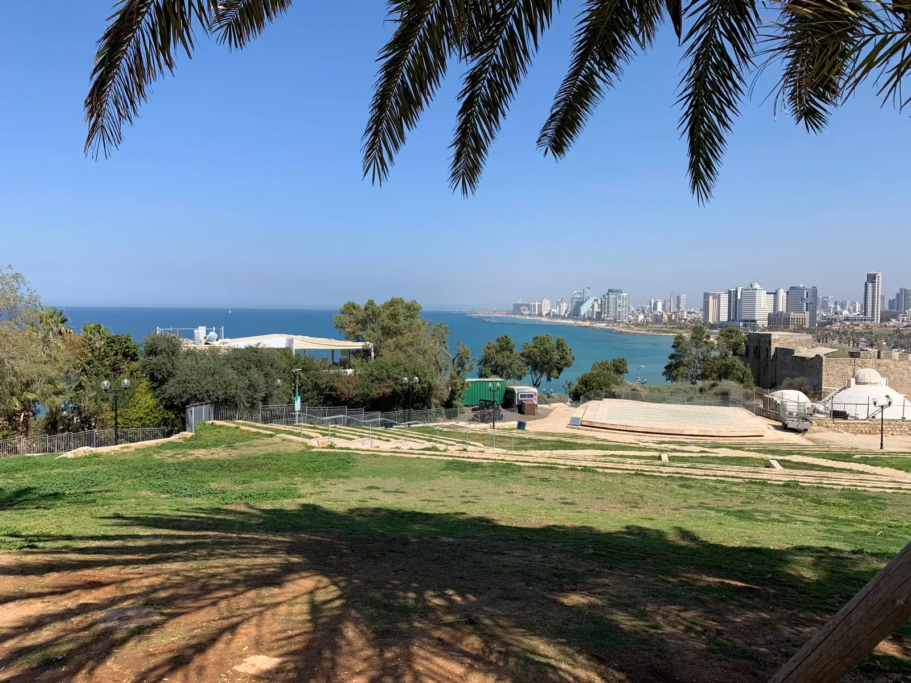
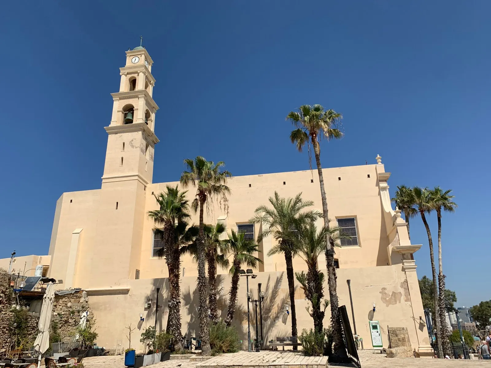
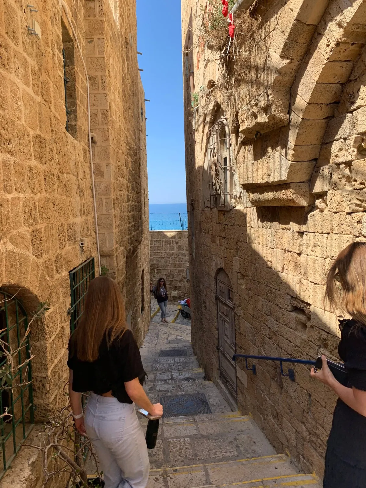
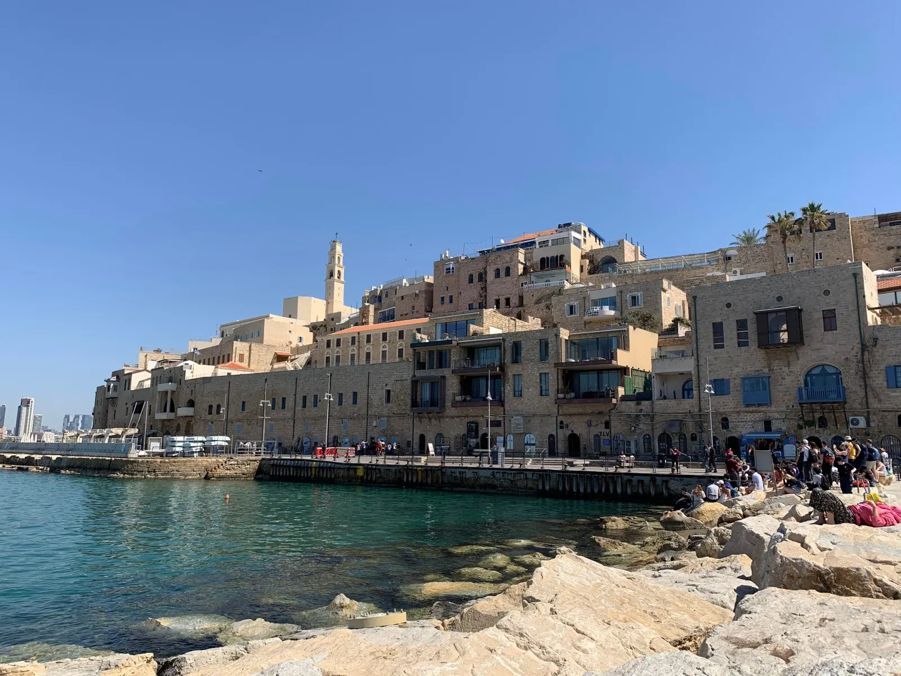
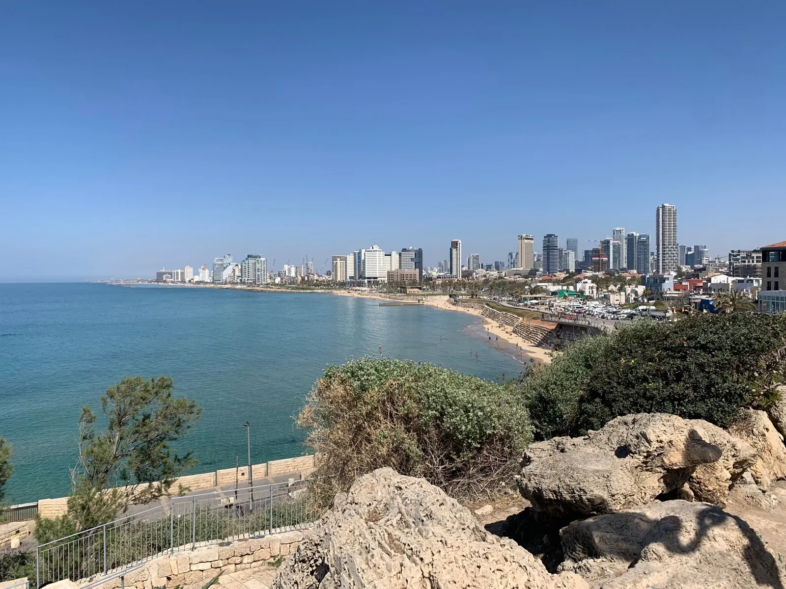
For lunch we went to the market, where I had the most amazing hummus! It had egg and eggplant inside, and so much flavor. Even though I was so full afterwards, I was told that I had to try yaffa knafeh (ka-NA-fa) with ice cream: a Middle eastern dessert served hot, soaked with a sugar syrup, topped with crushed pistachios and ice cream. I also tried baklava with pistachios (I love pistachio). The food here is quite rich and dense but so good.
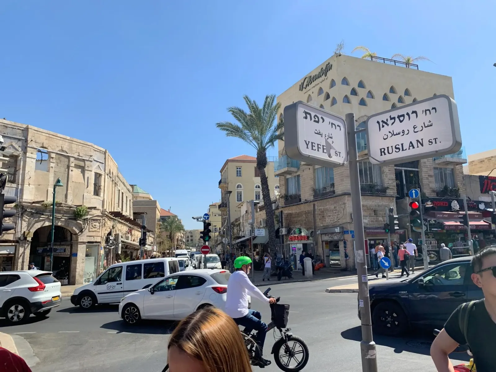
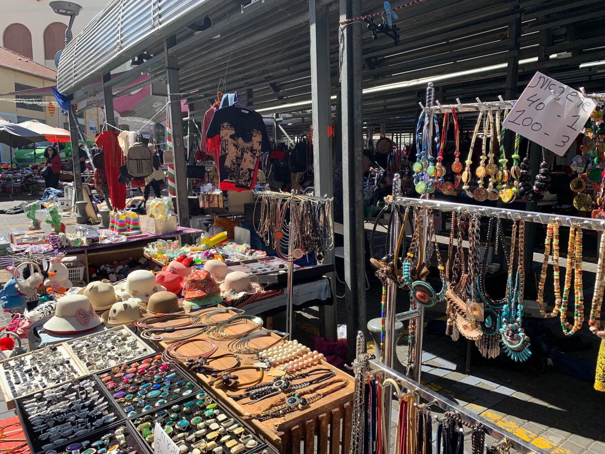
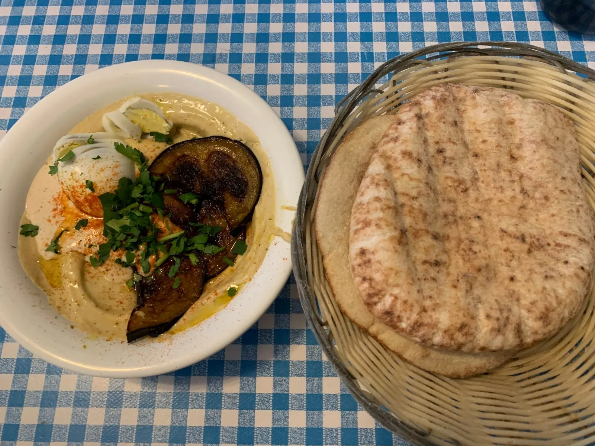
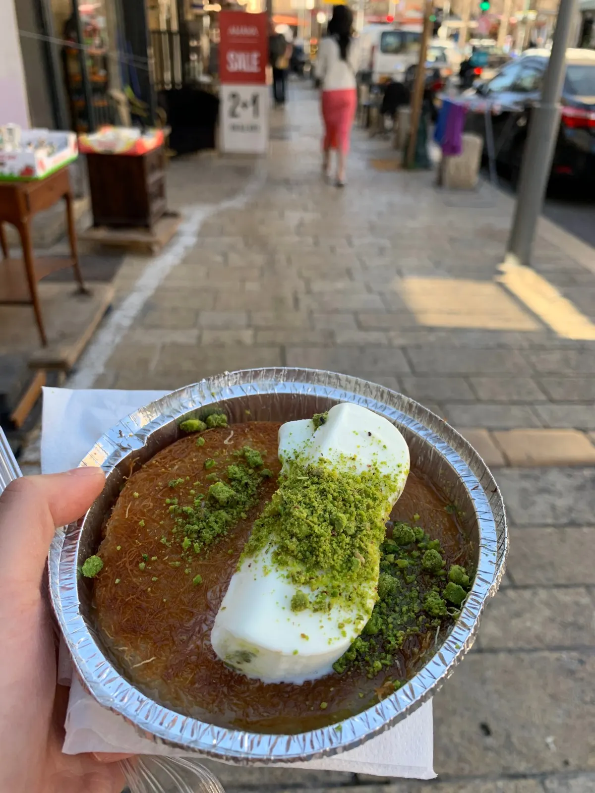
In the afternoon we visited the Peres Center for Peace, which highlighted Israel as a leader in technology and a Start-Up nation. In proportion to its population, Israel has the largest number of startup companies in the world, and in absolute terms, Israel has the second-highest concentration of high-tech companies in the world (behind Silicon Valley), with over 3000 high-tech companies and startups working in technologies, like compostable plastic. Helping blind people see. First ingestible video camera that can help doctors diagnose cancer and digestive disorders. First fully computerized, no-radiation, diagnostic instrumentation for breast cancer. An Israel company, M-Systems, was the first to patent the USB drive. The cell phone was developed in Israel in the Motorola branch, which has its largest development center in Israel.
We ended the day with a cooking class, where I learned that Israeli dishes = lots of spicy, lemon, and garlic. Israelis apparently dice everything—I feel like I never properly learned how to dice parsley, tomato, and onion! Together as a large group, we made a feast: chicken with lemon & herbs, sea bass, falafel, salad, hummus, tahini, kebabs, Ben Gurion rice (yellow, like couscous), pita bread, and rose water mallabi for dessert (coconut cream, sugar, corn flour, rosewater, mallabi syrup, peanuts, and coconut!). Paired with wine, of course.
Day Two: Law Firm Visit, Shuk Ha’Carmel Market, ANU Museum, Dizengoff
Our hotel was right by the beach, so I took advantage of the extra time in the morning to go for a jog along the beach. People were up early running, doing yoga, swimming, and listening to music. It was not too different from an L.A. beach, just smaller. I loved the ocean breeze, it was so calm and peaceful. We also saw a jellyfish on the sand! As we stared at it, trying to figure out what it was, someone walking by saw our mystified faces and grinned at us, pointing at it and saying “Medusa!” We later confirmed that medusa means jellyfish in Hebrew.
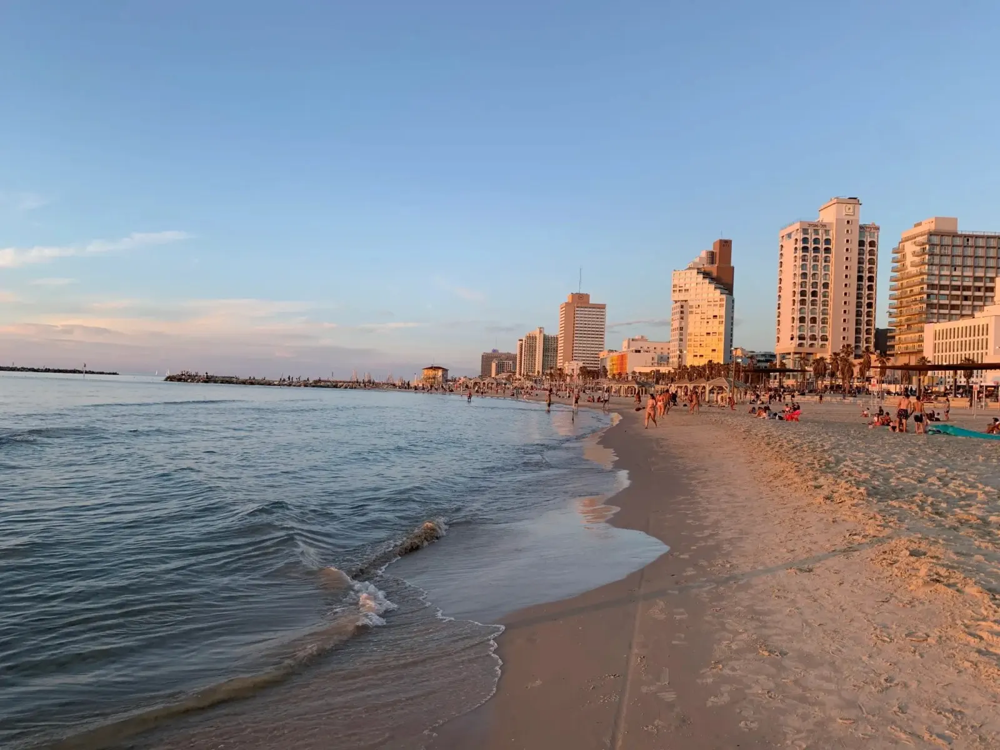
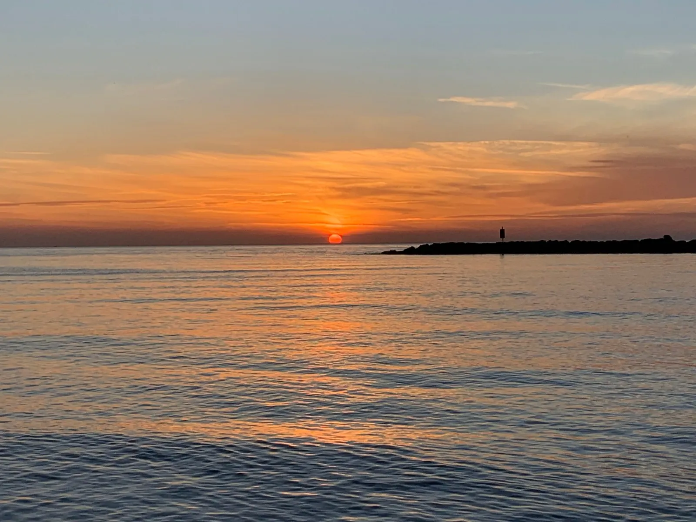
Hotel breakfasts here are a different level. There were hot and cold foods, savory and sweet. There was smoked fish—tuna and sardines, shakshuka—eggs poached in tomato sauce, a variety of salads and olives, chopped bell peppers and eggplant and zucchini and cucumbers that you can dip in yogurt or tahini or hummus, chocolate croissants, and toast and jam, served with juice and coffee (which is amazing here, btw). I piled my plate full each morning.
We started off the day by visiting a law firm that works with international clients. They talked to us about politics and Israel’s government, like how Israel has a parliamentary democracy consisting of a legislative (the Knesset – one house of parliament), executive (the government – cabinet of ministers) and judicial branch. The Parliament is majority-dominated by the government though, so it’s up to the courts to keep the two in check. The current debate is over whether the courts have the power to cancel laws passed by the legislature, and whether the legislature can overrule that and how much majority vote is required. I also learned that law students in Israel must complete a 1.5-yr internship after law school before they can take the bar exam and become attorneys! They also told us about one of Israel’s most important laws on the Jewish right to return — Jews (generally defined as having one Jewish grandparent, which is how Hitler defined them) get automatic citizenship if they want to live in Israel.
Lunch was at Shuk Ha’Carmel, another bustling flea market. After a lot of deliberating and failed haggling, I got a fairly pricey laboratory-made opal bracelet with a gold cover (so they told me). The guy at the shop made it himself and I thought it was pretty. I was still full from my meals last night and this morning, so I was happy to just have a fruit smoothie, though right after we left the market I suddenly got very hungry (must be jet lag). Luckily, my friend’s baklava tied me over until dinner. Everything is pretty expensive here — I kept feeling like I was getting a good deal because of the 3.5/1 USD/Shekel exchange rate, but when you convert it, it’s not such a great deal (though sales tax is included in the price and seems pretty low).
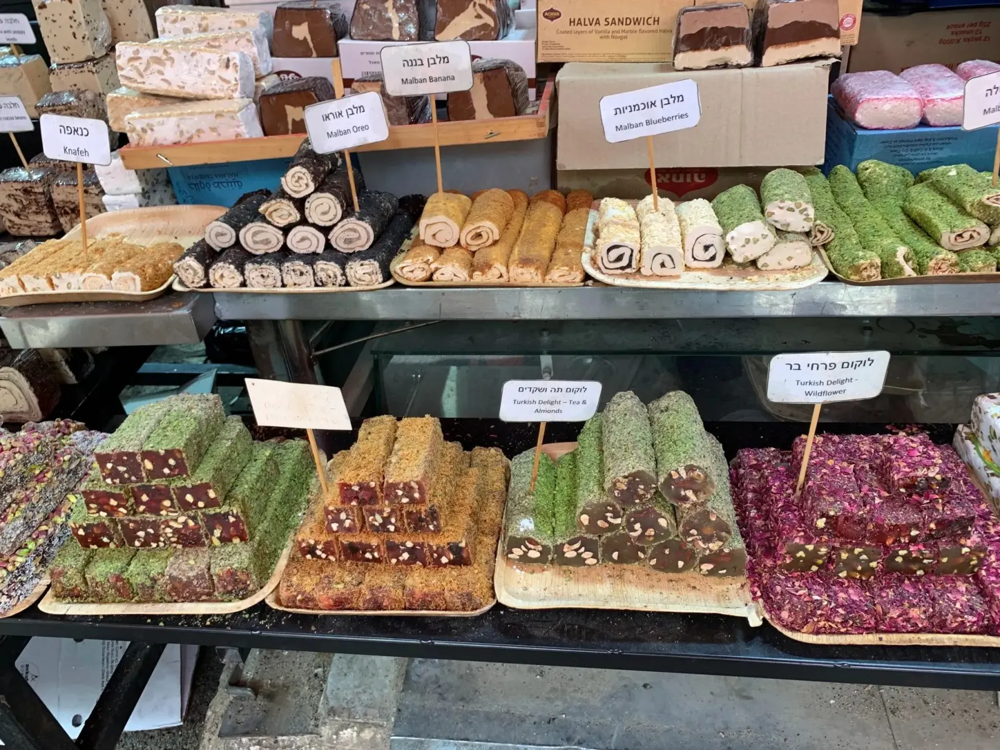
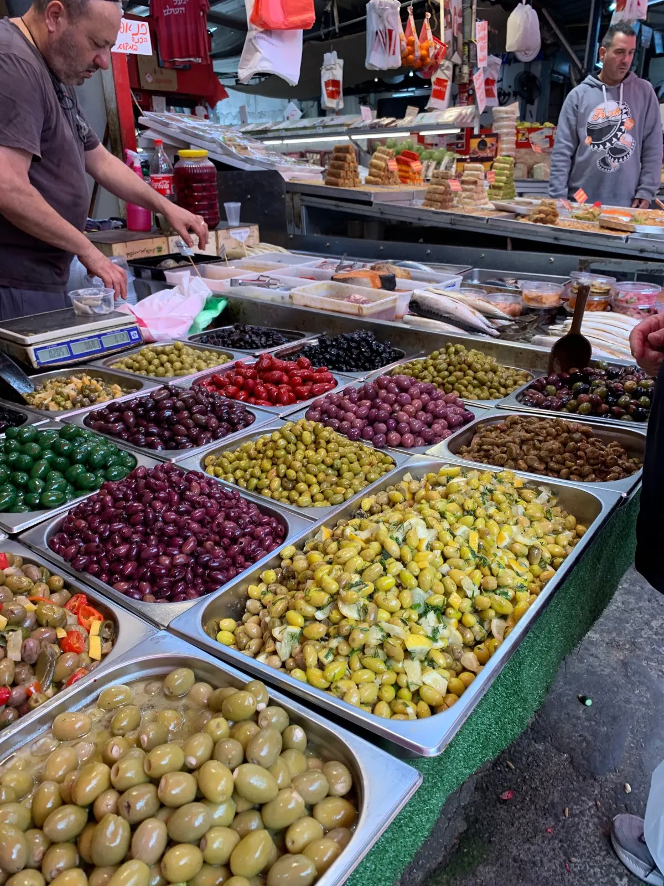
We then visited the ANU Museum – the Museum of the Jewish People – which celebrates the multiculturalism of Jewish diversity.
Back at the hotel, an Israeli-Arab and Palestinian told us his story and how he views a two-state solution between Israelis and Palestinians. One reason this conflict is so tough because the groups are siloed apart — Israelis go to school with (and marry) other Israelis, Palestinians with other Palestinians, Christians with other Christians — not deliberately but because they live in separate communities and neighborhoods and rarely interact with each other, which makes integration and communication even more challenging. Another thing is how complex the ethnic and religious groups are—for example, the majority of Christians in Israel are Arabs, and many self-identify as Palestinians.
We had dinner at Dizengoff, a city center-like street with bars and restaurants in walking distance from our hotel. It had a little bit of a European small-town feel. We went to an Italian place and I had a spaghetti pomodoro—tomato sauce and basil—that was pretty good. Per an Israeli student’s recommendation, I bought a bag of bissli, a BBQ-flavored crunchy snack, at the supermarket. It’s eaten with bamba, a puffy peanut snack (Israel has one of the lowest peanut allergies in the world!) — people have different ways of eating them but one way is to eat them at the same time, one in the right side and one in the left side of your mouth, so you experience the bursting flavors together! I personally preferred to just eat the bissli. You can get these in the U.S. too—Trader Joe’s has bamba shipped from Israel, and you can find bissli in kosher markets!
Day Three: The Dead Sea
We drove to the desert today, though the grass was surprisingly green and looked like rolling countryside on the way there. We passed by Bedouin villages and saw herds of goats!
The Dead Sea, a large salt lake in the Jordan River Basin between Israel and Jordan, is a wonder of the world that people flock to. It is not only the lowest point on earth, but also the saltiest and most mineral rich body of water in the world. It is religiously significant because the Dead Sea Scrolls were discovered less than 1.5 miles from the northwestern shore of the Dead Sea in a cave between 1946-56. The Dead Sea Scrolls are considered sacred religious artifacts because they are the oldest known manuscripts of works in the Hebrew Bible. Before they were discovered, the oldest Hebrew manuscripts dated to the 10th century A.D., but the Dead Sea Scrolls date back to the 3rd century B.C. Jesus may have also been baptized near here.
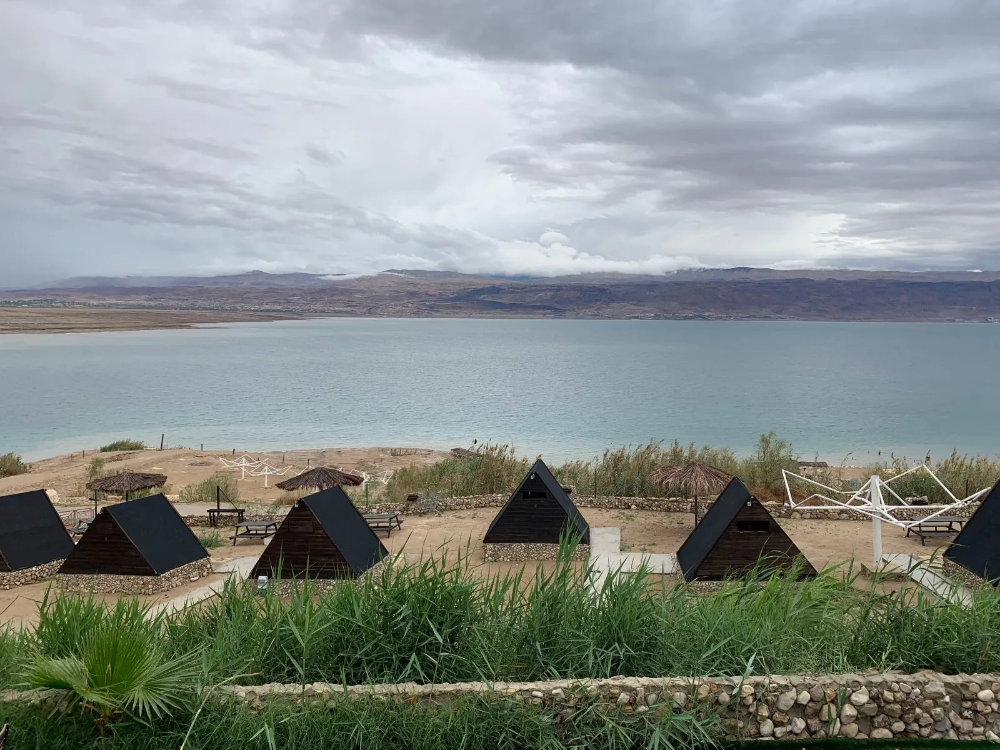
As its name suggests, there is no life in the Dead Sea (other than maybe bacteria and algae) – just water and salt (with 35% dissolved salts). In fact, it is so salty that it is a really bad idea to get the water in your eyes or mouth (my friend accidentally tasted it and said it was incredibly salty and bitter). The water is so dense with salt that it makes you naturally buoyant and stay floating, you can’t sink even if you tried! So you just float on your back, and propel yourself around by waving your arms (but don’t swim on your stomach — it can be easy to lose control and start flailing – my face got dangerously close to the water). It takes some time to stand up — you have to bend your knees and wait for your body to come around. The water gets saltier with increasing depth until it is so saturated at the bottom that salt crystals precipitate and settle. The salt crystals were sharp and prickly under my feet.
Floating in the Dead Sea was a strange but unforgettably cool experience, definitely a highlight of my trip. You can put the mud on your skin, it’s apparently really good for your skin—the contents of the water are believed to have healing qualities, containing minerals like calcium, potassium, and magnesium that are considered to be therapeutic in treating certain skin diseases. I only put it on part of my face and wish I had put it on the rest of my face because for the rest of the day that part of my skin was noticeably softer and smoother. Nearby was the store Ahava, a cosmetic company that sells skincare products made from the mineral rich mud. I learned that Ahava is the largest resource extractor from the Dead Sea and the only cosmetics company licensed by the Israeli government to mine raw materials at the Dead Sea – must be a profitable monopoly to have!
Unfortunately we didn’t get to go to Masada because of rainy (flash flood) weather, but we drove by it. It seemed to be in the middle of nowhere—just desert and mountains–but people found a way to get by, and it was very high up, which offered protection. Overlooking the Dead Sea, Masada is the mountain where Herod the Great built two palaces between 37 and 31 BC. King Herod also built another fortress in Jordan. After the destruction of the Second Temple, Judea fell, Jerusalem came under siege, and the remaining Jews (almost 1000) escaped to Masada. When the Romans laid siege, the story goes that Jews committed mass suicide, as their mantra was to live free or die.
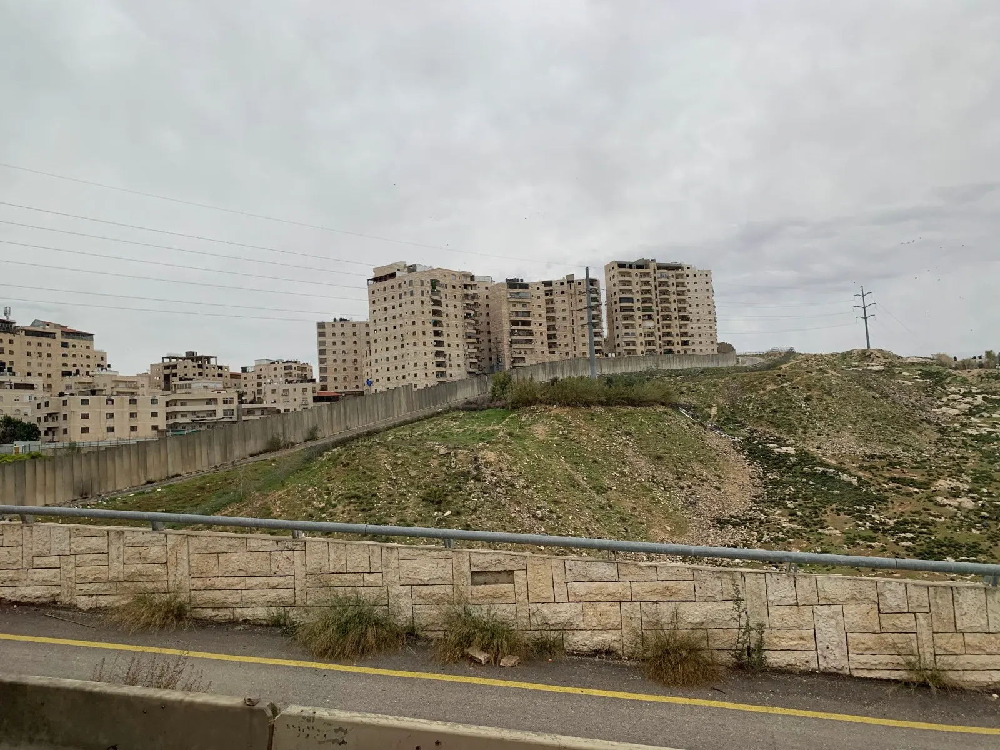
We had dinner at Hacchim, a restaurant with young adult vibes. The wait time was terribly long, and they were not organized at all in informing us about the wait time or our place in line. People really took their time eating. While waiting I had a moshiko—white rum, Jamaican rum, pineapple juice, angostura, lemon and mint. They have really good but strong drinks here that got me feeling tipsy real fast (especially on an empty stomach). Arak, a spirit from the anise drinks family, is also a popular drink here. The food was worth the wait though—we shared a bunch of appetizers (hummus and tzatziki, beets, cauliflower, tomato and feta, pita) as well as shish kebab, tender chicken, and fish platters. We chatted about all things Israel. I learned that everyone here is required to serve in the military, but they do it gladly—I got a sense of the unity and dedication they have towards their country.
I experienced some of the Israeli nightlife afterwards. We stopped by Golda, which has yummy pistachio ice cream, before going to Tedder, a chill bar in a large spacious warehouse-like room, before proceeding onto Drama Bar, a club with three floors, each with a different beat and style of music (American and Latino music are popular here). It cost 30 shekels to enter (ladies can enter for free on weekends though). We stayed there until 1.30am, then walked back to our hotel, where I found that my clothes reeked of cigarettes. Unlike in the U.S., a lot of people here smoke indoors.
Day Four: Nazareth, ATV and Syrian Border, and Sea of Galilee
Nazareth is the place where Jesus grew up. We visited the Basilica of the Annunciation, the largest Catholic church in the Middle East, where allegedly an angel came to Mary and told her that she would have a son to be named Jesus, making the church one of the holiest places for Christians, symbolizing the incarnation from divine to flesh. Many mosaics outside the church gifted by various countries were dedicated to Mary. It was pouring rain when we visited, which created a very peaceful, even if uncomfortable atmosphere. They were doing the Eucharist at the time and were thus singing a hymn.
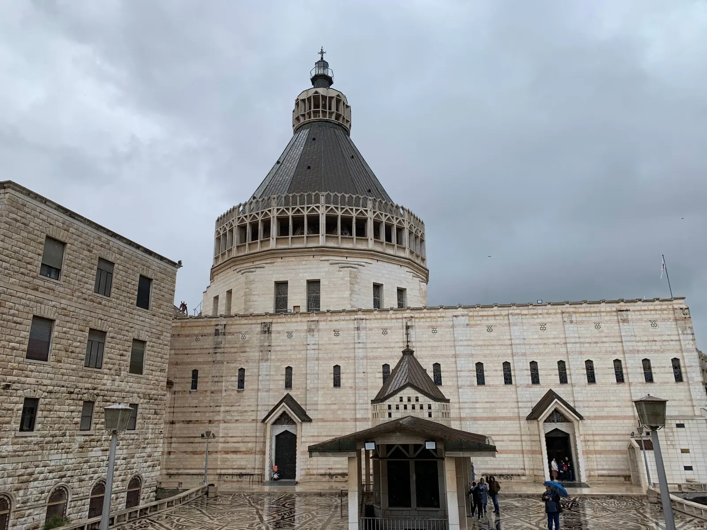
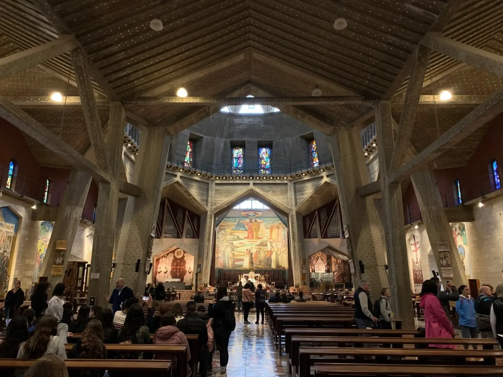
We had lunch at a welcoming Druze family’s home. The Druze (jer-UZE) is a minority group in Israel. While we sipped tea, our hosts told us about their religion: they believe that we all have past lives (though some can remember them better than others) and told stories of people who could recount their past life (or lives) (e.g. a 4-yr-old boy who knew how to fly a plane because he was a pilot in his past life). But you cannot convert into the religion—both parents must be Druze for their child to be Druze. Then they served us a delicious meal—I especially loved the eggplant and chickpea, chicken casserole, and rice wrapped in grape leaves, as well as the mint tea and baklava dessert afterwards.
In the afternoon we changed course and drove ATVs (off-road vehicles) at Golan Heights! Syria owned the Golan Heights until 1967; Israel owned it after the Six Day War, though in the 1990s Syria unsuccessfully tried to take it back. We saw the border with Syria from a distance! There was a fence along it. It was a cold, windy, and cloudy day—not ideal weather for ATVing—but for a few moments when we got out of our vehicles, the wind blew away the fog, revealing a beautiful view of the lush and green countryside that reminded me of Napa Valley or Wales. It wasn’t ATVing, like driving a Jeep through the dunes of the Sahara Desert—we didn’t go over 25 km/hr (15 mph) and drove on both paved road and off-road, which was muddy—but we sloshed slowly through the puddles so that we wouldn’t drench ourselves with mud. We passed by several (now empty) vineyards—apparently they also have good mangoes here!
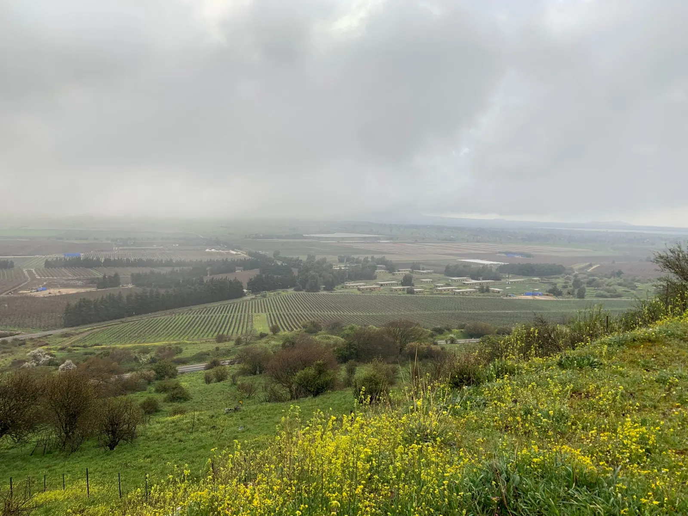
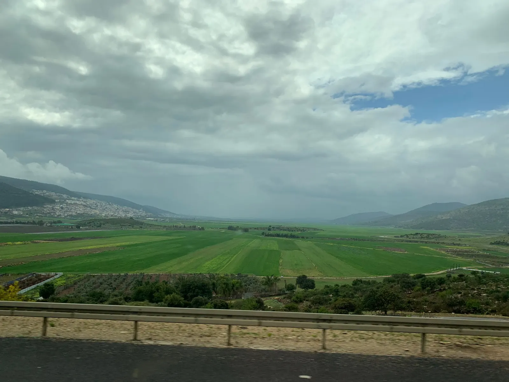
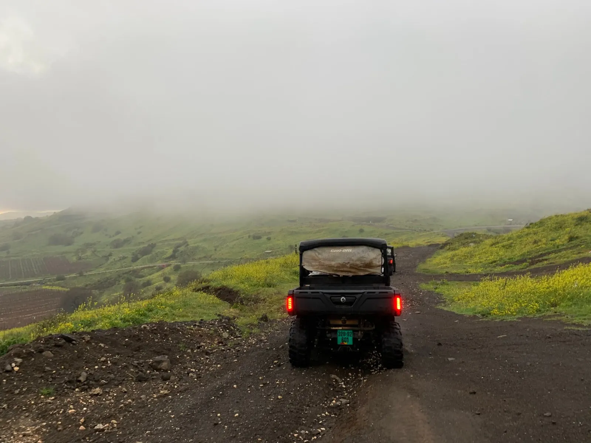
Afterwards we went to a winery for wine tasting, then dinner at a hotel in Galilee—mint tea, the usual Israeli appetizers with hummus, grilled chicken, steak, kabob, and potato, paired with white wine and pistachio ice cream for dessert. One cool fact I learned is that Israeli milk (from cows, goats, and sheep) primarily comes from Israel, and Israeli cows have the highest milk production in the world (in line with Israel’s high-tech reputation)!
We stayed at a new hotel, a tropical-looking resort by the Sea of Galilee. The Sea of Galilee is where Christians believe Jesus walked on water, calmed the storm, and made Peter and Andrew into “fishers of men.” It’s where John the Baptist baptized Jesus. And it’s where Jesus fed the masses with a few loaves and fish and gave his Sermon on the Mount.
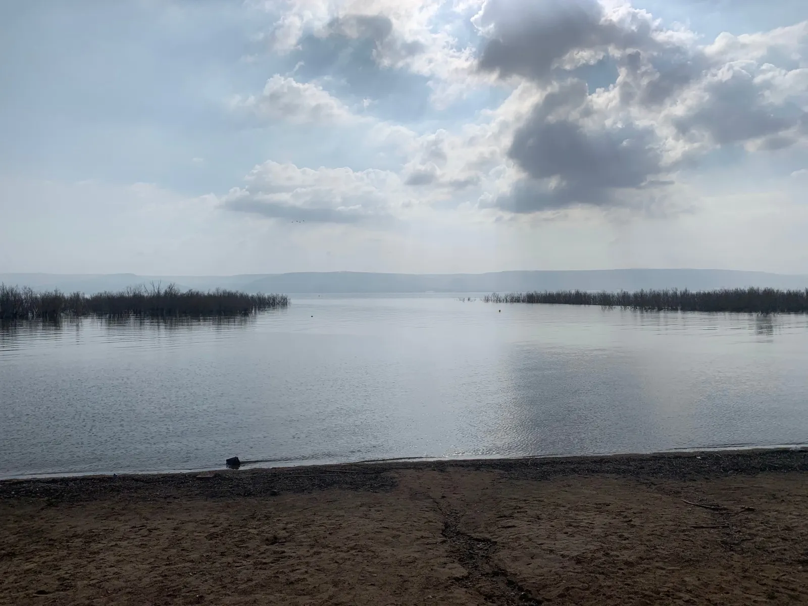
Days Five and Six: Jerusalem
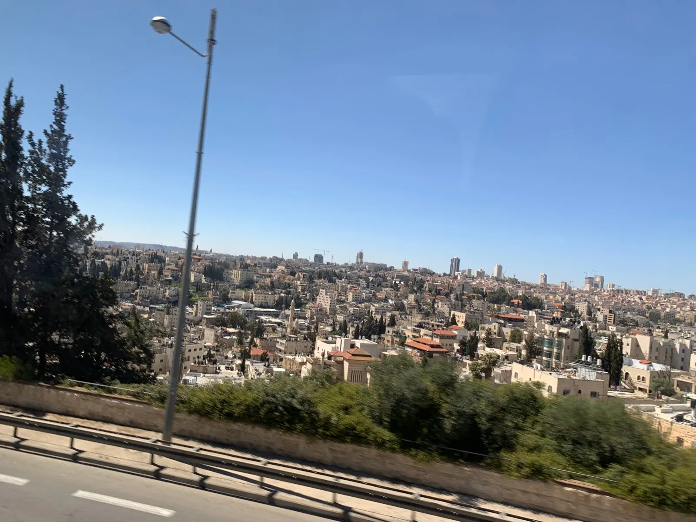
Jerusalem is the capital of Israel and the largest city in the country. The city was first mentioned in the Bible when King David designated it as the Capital of the ancient Israeli state (~1000 BC). Jerusalem is a holy city for Jews, Christians, and Muslims, hence it remains the center of religious tensions today. The New City contains the Knesset (Israeli parliament) and the Supreme Court building, as well as Yad Vashem. To the east of the Old City is the Valley of the Kidron, beyond which lie the Garden of Gethsemane and the Mount of Olives. The Mount of Olives is the world’s oldest continuously used cemetery, also where Christians believe Jesus ascended to heaven.
Day Five: Al Aqsa, Old City
We drove really close along the Jordan border, marked by just a fence. We also drove by lots of date palm trees!
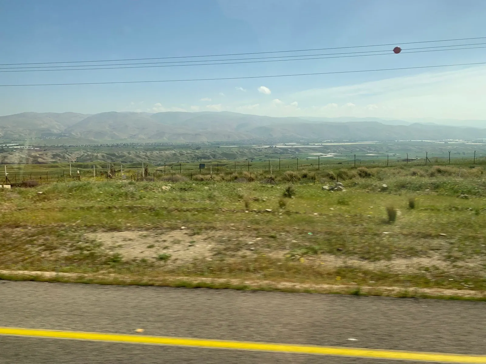
The eastern part of Jerusalem is the Old City, a quadrangular area surrounded by a wall, within which are 4 quarters: the Muslim quarter, the Jewish quarter, the Armenian quarter, and the Christian quarter.
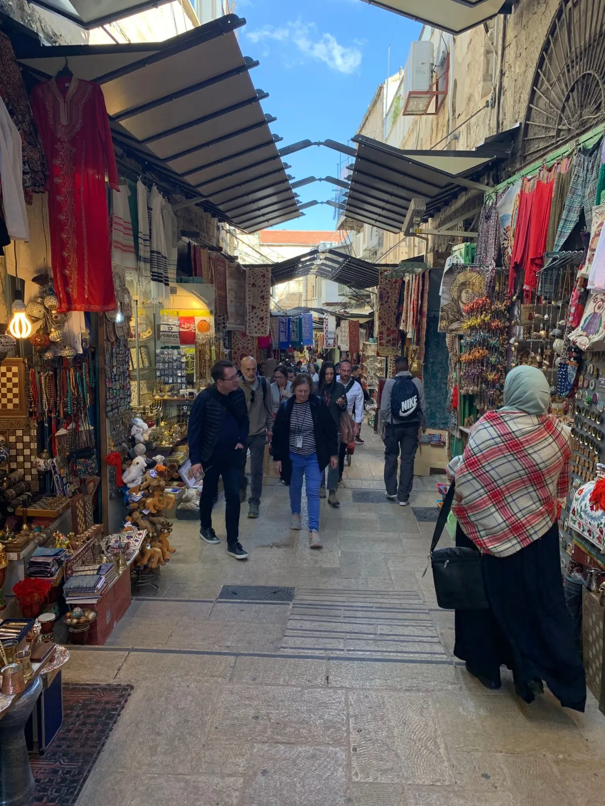
Al Aqsa, or the Temple Mount, containing the Dome of the Rock and the Al-Aqsa mosque, is a site of controversy because both Israelis and Palestinians claim control of the land as their historic birthright. It is the holiest of holies for Judaism, and therefore also very important for Christianity and Islam (which came from Judaism). It is here (the golden Dome of the Rock) that Abraham, the progenitor and first patriarch of the Hebrew people, is believed to have almost sacrificed his son Isaac (see Genesis 22:1-19). (Some observant Jews don’t visit the site because certain areas were forbidden during Old Testament times—only the high priest could enter the holiest area.) At the same time, the Prophet Muhammad, the founder of Islam, is traditionally believed to have ascended into heaven from the Dome of the Rock, coming from Mecca on a flying donkey. Even today, you cannot go inside either mosque unless you’re Muslim (though how they determine whether someone is Muslim can be a little arbitrary).
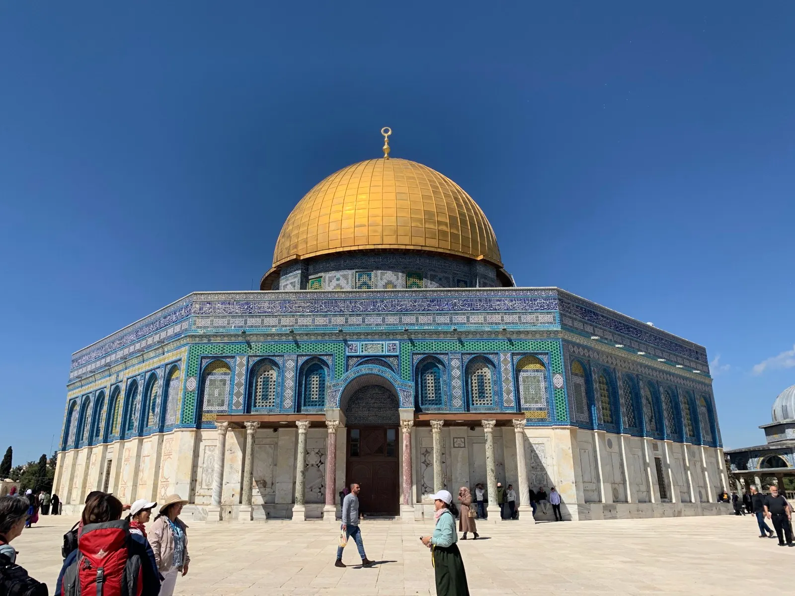
Muslims maintain a strict presence over the site to this day—you cannot pray or wear a cross or any non-Muslim religious relic while on the site, which has been the source of news-making tensions. It was the only place where our tour guide had to talk quietly and be careful about what she said. There is very strict security around the site, like airport security 2.0. The only way to access the Al-Aqsa compound is through a narrow tunnel, and once inside, you basically can’t expose any skin, though the dress code seemed to be somewhat arbitrarily enforced — they let me wear my elephant pants, but ladies wearing jeans or leggings had to put on these loose dark green pants (though we still saw other people walking around in jeans). Today the site is controlled by Jordan, which Israel allowed because it is such a disputed, high-stakes, controversial site. In July 2017 there was a terrorist attack where two Muslim extremists smuggled in guns and killed two soldiers. As a result, Israel installed metal detectors at the entrance, which escalated tensions as Palestinians viewed it as Israel infringing on one of their most sacred sites and asserting further control. Muslim protests eventually led Israel to remove the detectors. Today, only non-Muslim visitors go through metal detectors.
The Western Wall is the remaining wall surrounding the site, and thus the closest holy place where Jews can pray outside the Temple Mount. It is divided into sections for men and women because in the Orthodox Jewish tradition, men weren’t allowed to hear women sing! Per tradition, you would enter on the left to show that you were ill or needed assistance, and after worshipping, you would leave walking backwards to avoid turning your back on the wall. People would leave notes in the crevices of the stone wall as prayers. These notes would later be collected and buried in a special place for holy relics. Interestingly, the wall didn’t mean much when it was built, but it sure does now. Synagogues around the world pray turning to face the wall.
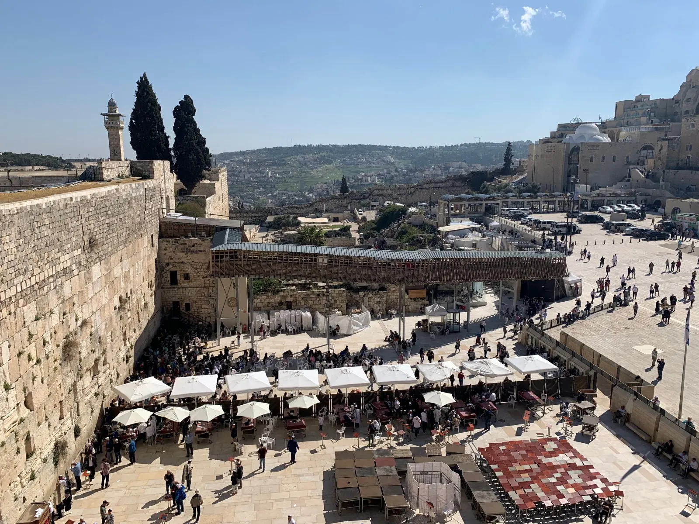
As the site where Christians believe Jesus was crucified and buried, the Church of the Holy Sepulchre is the most sacred of Christian sites. It was built in 326 CE by Constantine and later destroyed by the Persians. It was rebuilt and destroyed again before the Crusaders completed the current reconstruction in 1149 CE. It used to not be part of the city, but rather was outside the city. The site was so holy that in the 19th century, 6 groups (Catholic, Greek Orthodox, Armenian, Syrian, Coptic, and Ethiopian) among the Church fought over who was in charge of what, including for tedious things like who would wash the stairs (because they all wanted to!). The top left photo shows where Jesus’s body was prepared for burial – people would pray, kiss the wooden plank, and lay their jewelry on it to bless it. The top right photo is Jesus’s tomb.
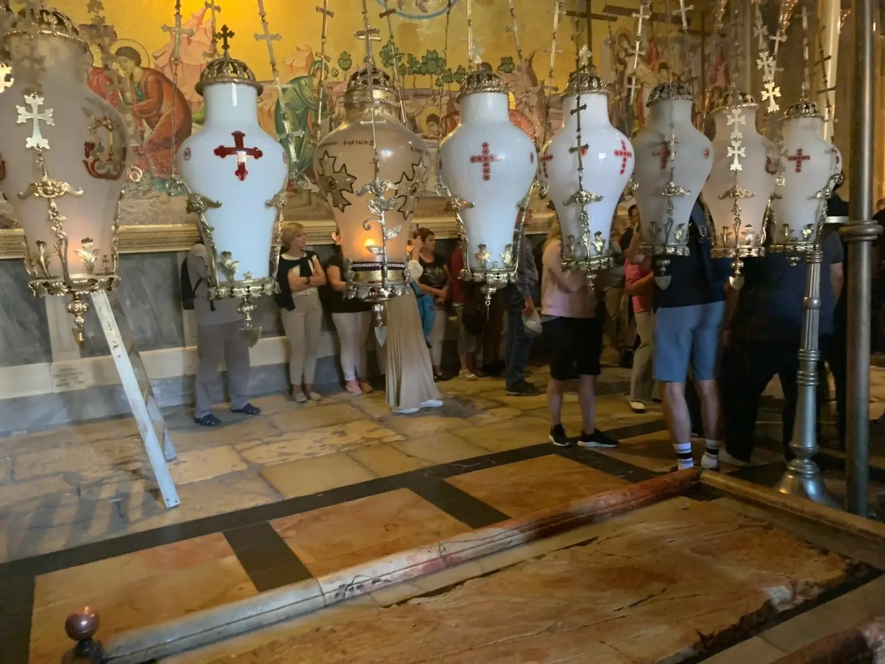
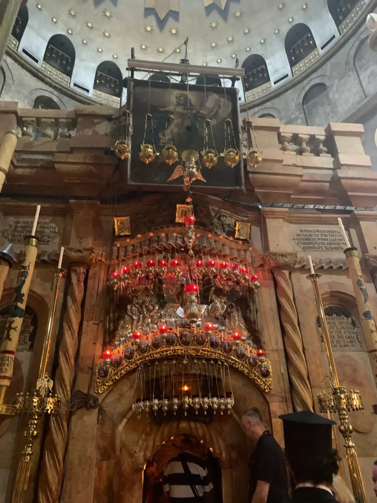
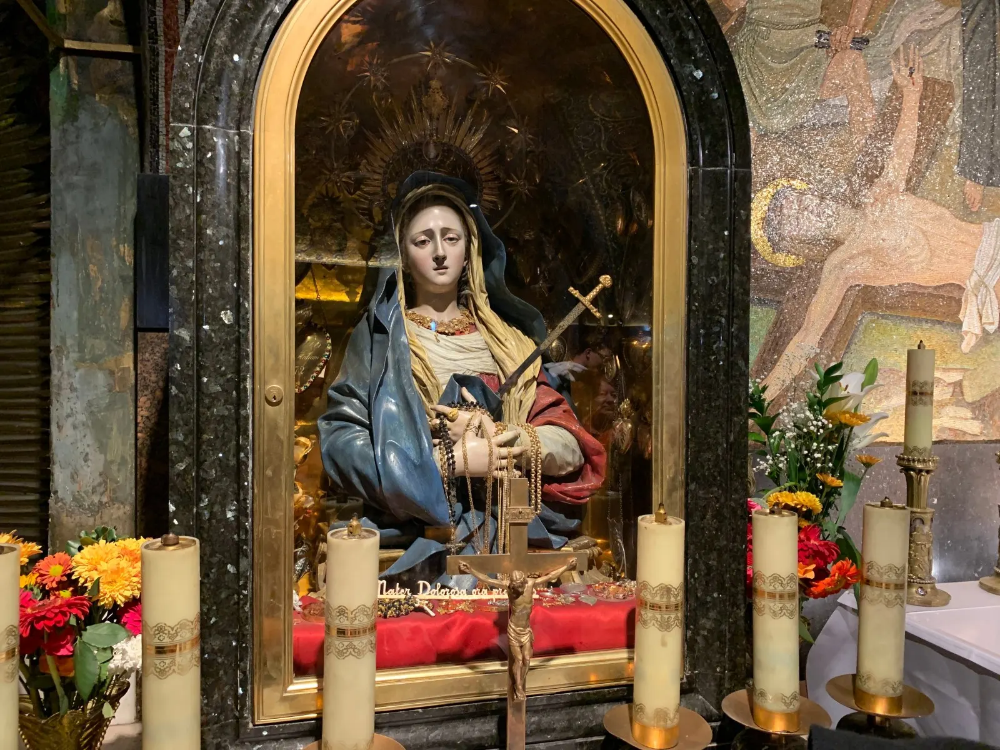
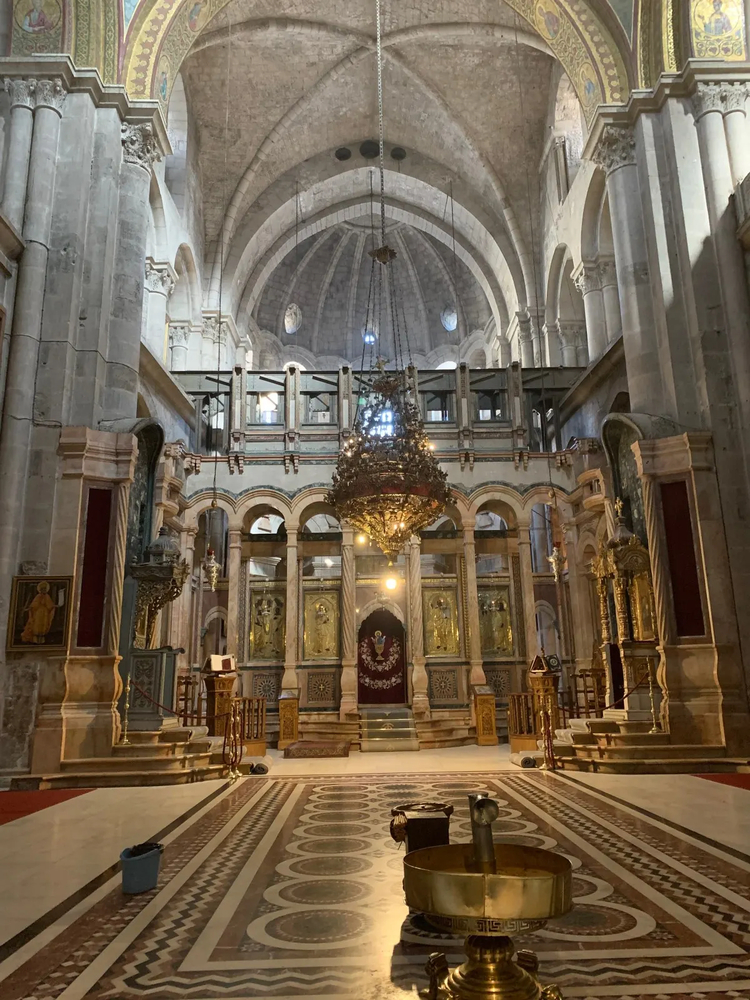
In stark contrast to the holy sites we visited today, we went partying at night (a reflection of how modern Jerusalem is, despite its incredible history!) at Machane Yehuda, an expansive half outdoor, half indoor flea market. I went with a couple friends to a Lebanese restaurant, where we enjoyed kubbeh—fried bulgar balls with mushroom; wine leaves stuffed with rice; and taboon eggplant with sesame cream and falafel. Afterwards we went to the outdoor bar across from it, joining a crowd of what looked like mostly high schoolers (some no doubt here for Birthright) in singing American pop songs at the tops of our lungs.
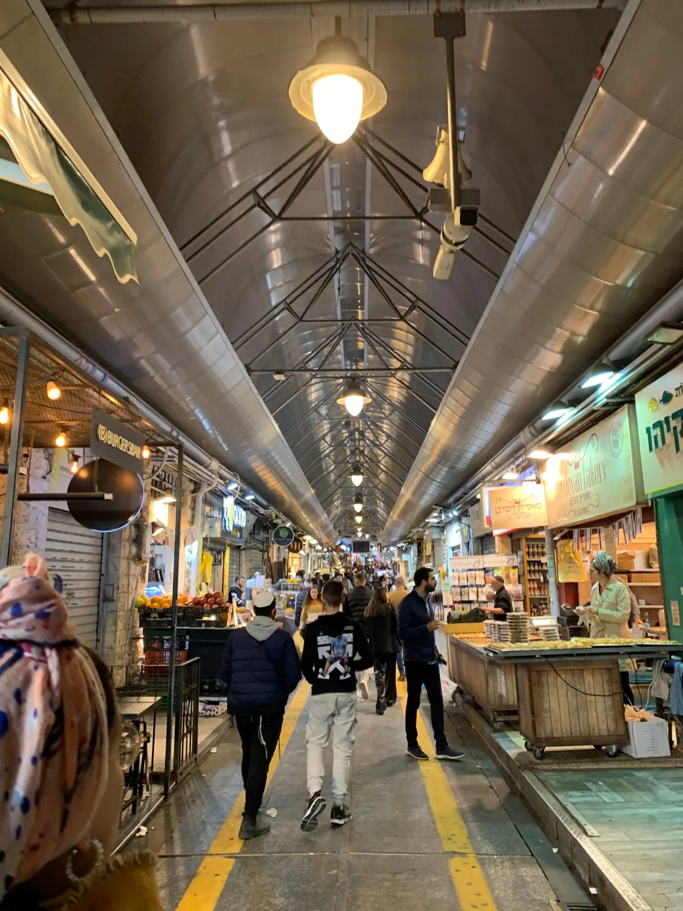
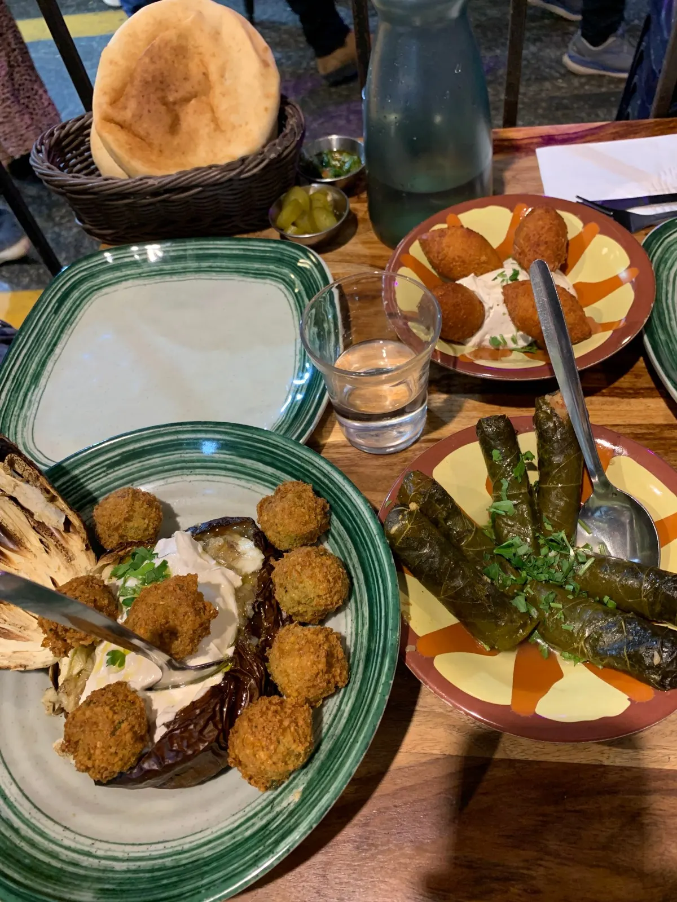
Day Six: Yad Vashem, Machane Yehuda, Shabbat Dinner
Yad Vashem is Israel’s official memorial to the Jewish victims of the Holocaust, established in 1953. The museum is designed in the shape of a prism, and the path you walk goes in zigzags so that you must walk through the most painful moments of Jewish history, from personal stories of the Jewish communities before WWII and the rise of the Nazis to the tragedy of the mass genocide, before reaching the light at the end of the “tunnel.” As you exit the museum you pass by the “Hall of Names,” a memorial with over 3 million names of Holocaust victims. Some facts from our tour that particularly struck me:
- The Nazis were democratically elected and began taking power in 1933. Because Germany lost WWI, they needed a leader who could make them feel strong again, and the Jewish people became a scapegoat (even though the Jews sacrificed and fought hard for their country). We saw disturbing exhibits of how the Nazis spread false allegations and demonized Jews by portraying them as people who killed Christian babies and used their blood to bake matzahs, or making caricatures of their noses as a symbol of their inferiority.
- Hitler was initially humiliated by a Jewish lawyer who forced him to confess that he ordered the murder of Germans
- Non-European Jews were victims too, since Hitler’s goal was to murder all Jews
- In 1938 the Nazis began destroying synagogues, which were the center of Jewish life
- About 1200 anti-Jewish laws were passed, e.g. all Jews must be marked and visibly identifiable. Jews were immediately shot in public if they failed to follow this law
- Locals, both within and outside Germany, took their own initiative in helping to murder Jews — this betrayal by local communities who were caught in the anti-Semitic tide resulted in many more Jews being killed as a result.
- The Nazis started off by forcing Jews to dig their graves before shooting them. When that became too inefficient, they built extermination camps and gas chambers. The Nazis were systematically strategic in lying to Jews to force them into entering the gas chambers in the extermination camps. They would tell them that they were about to enter showers (since they were dirty after days traveling in inhumanely crowded railroad cars), even installing fake shower-heads in the chambers. And instead of starving them outright in the extermination camps (which would lead to revolts and riots), the Nazis gave them just enough food to dampen resistance.
- Other countries including the U.S. did nothing, choosing not to bomb Auschwitz, for example.
- The Nazis chose murdering Jews over winning WWII—perhaps they didn’t trust the Jews to fight for Germany. Imagine if the Germans had been more strategic and used the Jews as soldiers in the war instead of devoting all their energy and resources to wiping out an entire human army! It’s mind-blowing to think that 6 million Jews may have indirectly sacrificed their lives for the Allies’ victory.
I think we all walked out of the dark museum into the blinding light of that sunny day with emotional and heavy hearts. It was an eye-opening experience and a lot to process, visualizing the hell that millions of Jews suffered. Definitely a must-visit in Israel.
For lunch we went back to the Machane Yehuda market, where I was badly ripped off on spices, dates, and olive oil — but still highly recommend these as gifts from Israel!
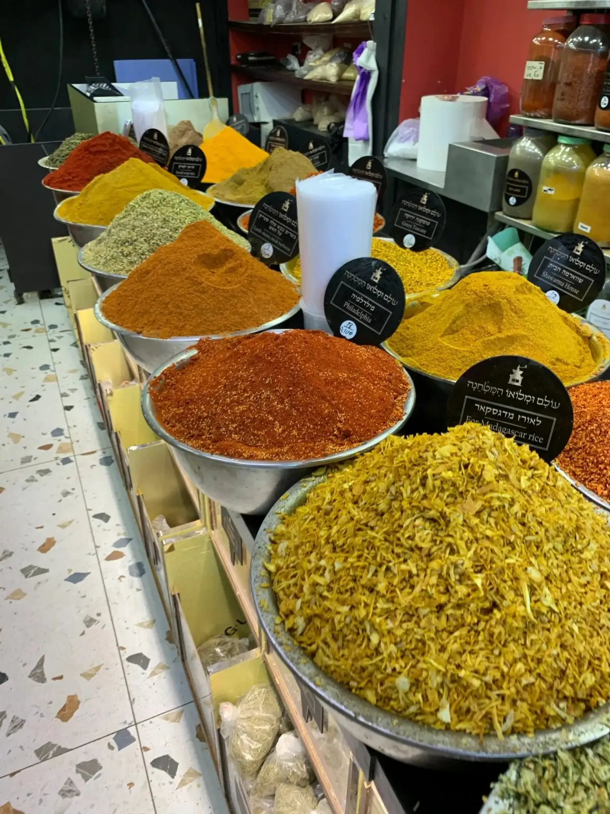
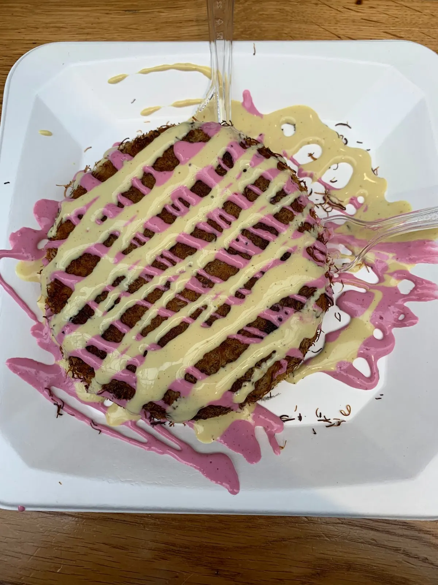
We ended the packed day with a Shabbat dinner. Shabbat takes place from sunset on Friday to sunset on Saturday, and is how Jewish people remember the story of creation where God created the world in 6 days and rested on the 7th day. The Israeli students led us through the tradition before the meal of lighting the candles, pouring the wine, and breaking the bread. Since the elevator cannot be used in the usual manner, there was a Shabbat elevator that stops at every floor. We had a delicious buffet-style dinner at the hotel, with meats, potato, rice, salad, soup, and dessert.
Day Seven: Gaza Border
Gaza was one of the biggest Philistine cities, with over 3000 years of history. In 1967 Gaza was passed to Israel from Egypt — it is considered Area A territory per the Oslo Accords. In 2005 Israel decided to leave the area, only going in during operations, so very few Israeli Jews have been there since then. Hamas, a terrorist organization, took over after “democratic” elections took place and kicked out Fatah (PA) which is considered their enemy. Fatah is considered a party in the government (though they haven’t had elections for a long time). Hamas established the first Antifada uprising in the 1980s and is funded by Qatar, which also funds Al Jazeera, another terrorist organization that states their goal of eliminating Israel in their charter.
Israel captured the West Bank and Gaza Strip during the Six-Day War in 1967. Currently, millions of Palestinians live in the Gaza Strip, West Bank, and Israel under the control of the state of Israel. The conflict over these lands has left these Palestinians facing humanitarian crises including lack of access to water, food, electricity, and medical care. 50% of the population lives in poverty. Because any resources Israel sends over goes through Hamas, Israel has to deal with security risks. For example, the people in Gaza need cement to build homes, but cement also builds tunnels that Hamas can use to reach Israel; they need lampposts to provide electricity but which can also build missiles. Thus, 85% of the funding Israel sends in funds Hamas, but Israel does it anyway because the people need the other 15%.
I almost didn’t come on this trip because I was worried about safety. I knew that Israel had a strong missile defense system, with its Iron Dome that can detect incoming missiles and destroy them if they will land in a populated area, but in the weeks leading up to the trip a couple terrorist acts happened, and that made me paranoid (even though shootings happen literally everyday in the U.S.). I tried to take some comfort in the fact that most of these terrorist acts are targeted at specific groups, and that local Israelis brave the risks every single day. Ironically, despite a war going on, I felt safer in Israel than I sometimes do in the U.S., as guns are much more strictly regulated there. Yet of course, Israel is constantly going through war, with varying levels of intensity. As an additional layer of security, they also have bomb shelters made of very thick concrete to protect their residents. This bomb shelter in a playground was painted like a caterpillar:
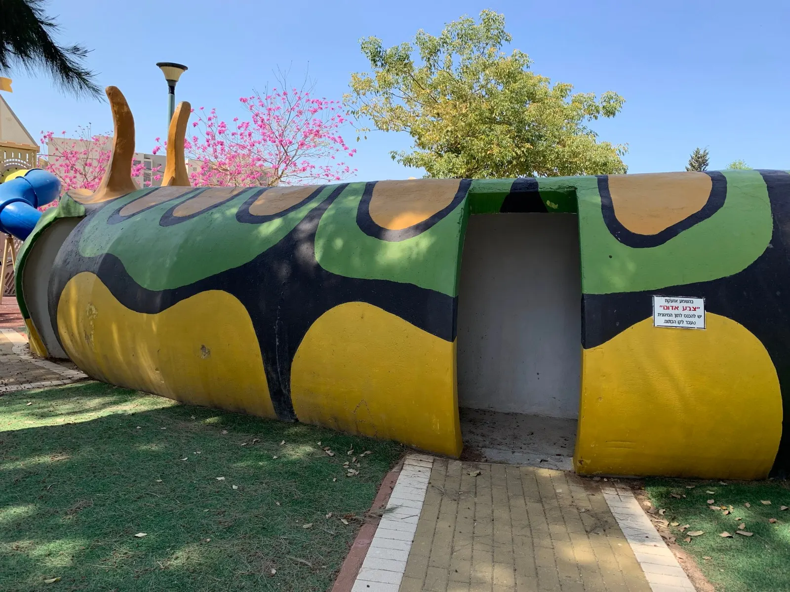
We visited Sderot, located less than a mile from Gaza. Where you are located determines how long you have to run for shelter once the warning alarm goes off. If you live in Tel Aviv you have 1.5 minutes, if you’re by the border it’s 15 seconds. In Netiv HaAsara, the closest village to the Gaza border, you have 5 seconds. New residential buildings are now required to include shelters. We had lunch at a lady’s beautiful home and she told us about how things are relatively more peaceful today, but not too long ago she went through a scary time where her neighborhood faced many more attacks, yet she continues to risk her life to live there and raise her kids there because that is their home.
And then we went to the Gaza border, which was wild! We saw the Hamas guard tower across the border, the Israel guard tower on our side of the border, the concrete wall, and the outer and inner fence encircling us. Our host had started a “Path to Peace” project, a mosaic wall, which we added to with our own round stones on which we wrote a message.
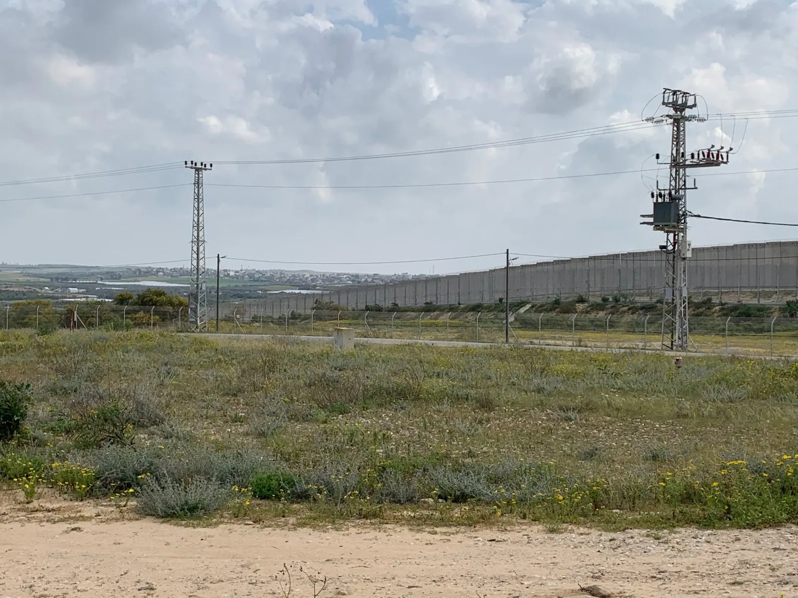
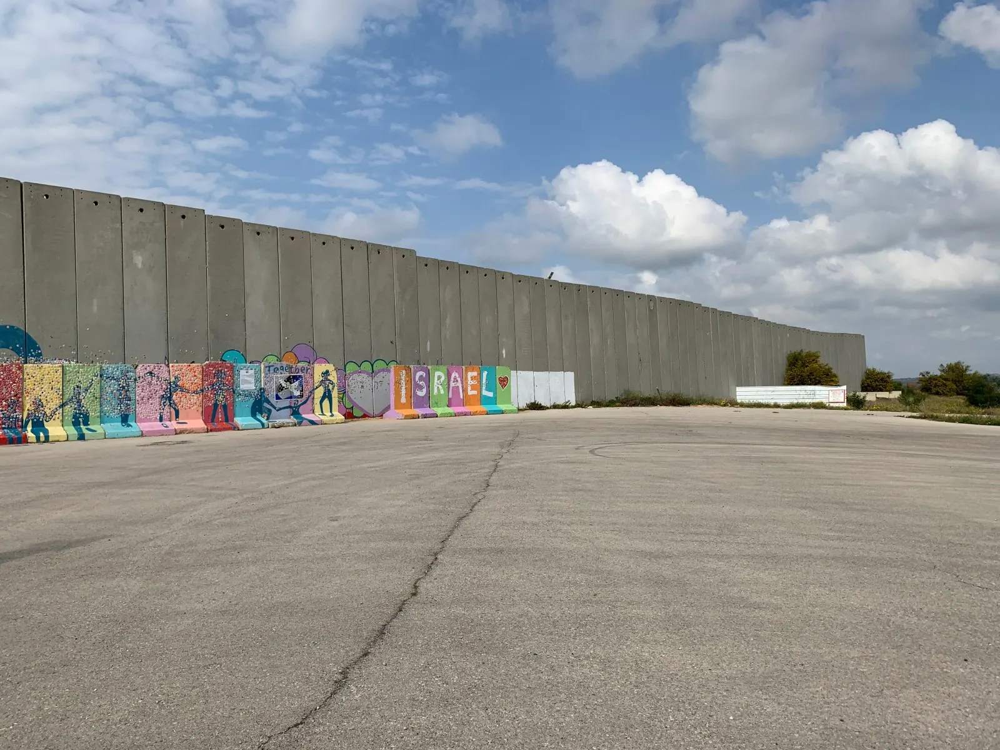
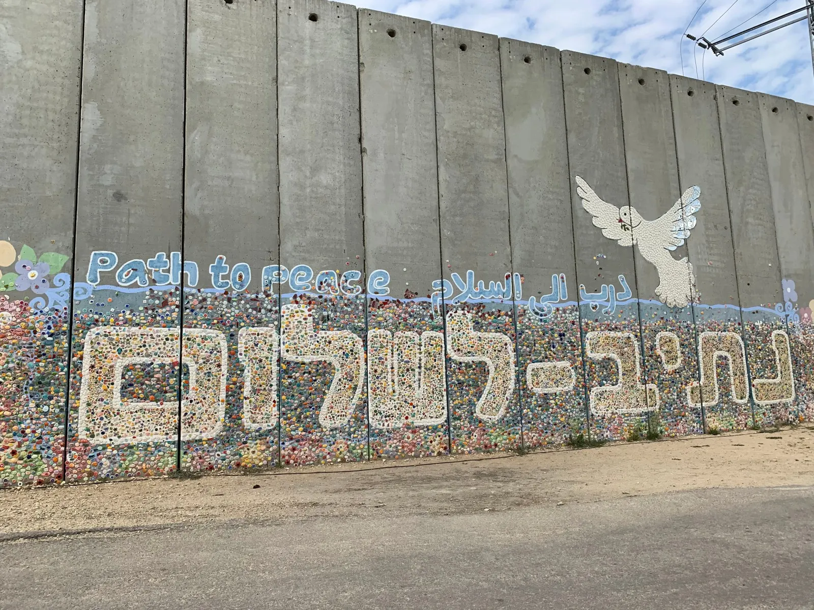
On the way to the airport, we saw a few people carrying Israeli flags, on their way to the protests. Recently every Saturday evening there have been protests in Tel Aviv against the government’s proposed judicial overhaul, which would give the government effective control over the appointment of Supreme Court judges and allow parliament to overrule many decisions of the court. This has caused one of the biggest domestic crises in Israel’s recent history as protesters see this as a threat to democracy in Israel. As much as I wanted to stay and observe the action, we had a plane to catch, so we passed by them, with a glimpse of our last Israel sunset as we made our way to the airport and said goodbye to our new Israeli friends.
While there are still many gaps in my knowledge, visiting Israel helped illuminate why this place of 9 million people that’s the size of New Jersey means so much to so many people, why it matters what the President of the United States thinks about Israel, and why there has been and continues to be so much bloodshed. This country is the foundation of Judaism, Christianity, and Islam, three of the largest religions, each believing that God has given them the land. My eyes were opened to the incredibly complex history of this land from ancient times to Israel’s establishment in 1948 to today’s continuing conflicts. But while the conflict seems too entangled to be resolved any time soon, I met many who remain hopeful that we can still find a way to share the land and find peace.
No matter how religious you are, or where you stand in the Israeli-Palestinian conflict, I feel strongly that everyone can benefit and better understand the world we live in after visiting and learning more about this small but significant country.